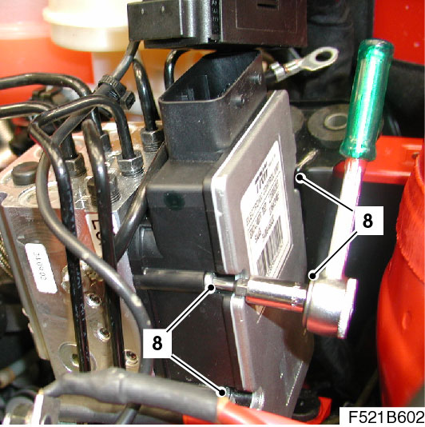
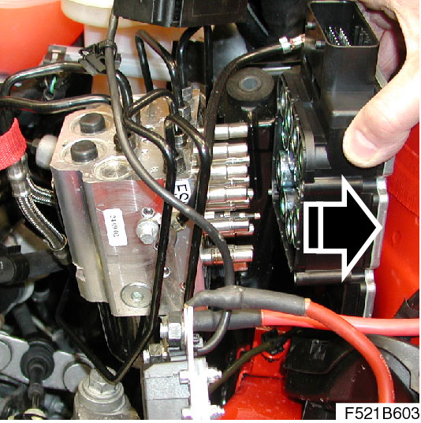
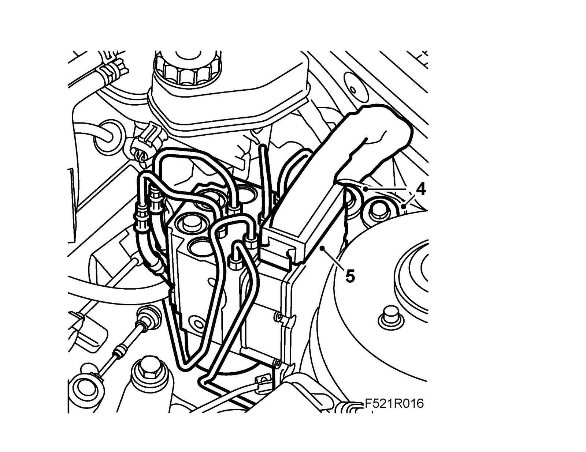

Control Module, TCS (382)/ESP (671), B207, Z19
Control module, TCS (382)/ESP (671), B207, Z19To remove
1. Touch ground.
Important
ESD-SENSITIVE COMPONENT
Earth yourself by touching the car body before plugging in / unplugging components. Do not touch the component pins. Read Before removing a control module before changing a control module.
2. Put on 82 93 706 Wing cover.
3. Remove battery and lower part of battery cover.
Important
Take care when releasing the locking mechanism on the connector so as not to damage the connector. Pull the halves straight apart to avoid bending the pins. For further information regarding connectors, refer to Connectors, handling and inspection.
4. Separate the connector from the control module.
5. Remove the bracket from the suspension strut tower.
6. Raise the TCS/ESP assembly around 25 mm so that the control pins come out of the rubber bush.
7. Move the assembly towards the engine so that the assembly's bolts are accessible with a ratchet handle and bits. Suspend the assembly with a 83 95 212 Strap.
Note
Be careful with the brake pipes.
8. Remove the four bolts. Leave the lower rear bolt in the control module.

9. Remove the electronic unit by twisting out.
Note
Ensure that the bolts come with it. Remove the gasket from the hydraulic unit if it does not follow the control module.

To fit
1. Check that the gasket sits correctly on the new control module.

2. Fit the inner bottom rear screw and fit the control module to the assembly.
Fit the bolts.
Tightening torque 2.5 Nm (1.8 lbf ft)
Note
Tighten the bolt alternately.
3. Fit the assembly in place with the guide pin in the rubber bush. Make sure the brake pipes are secured in the clips on the MacPherson strut tower.

4. Fit the bolts to the suspension strut tower.
Tightening torque 25 Nm (18 lbf ft)
Important
Take care when plugging in the connector so as not to damage or press out the pins/sleeves in the connector. For further information regarding connectors, refer to Connectors, handling and inspection.
5. Attach the connector to the control module.
6. Fit the lower part of the battery cover and the battery.
7. Carry out Procedure after disconnecting the battery.
8. If control module is changed: Carry out the procedure specified for when a control module has been changed.